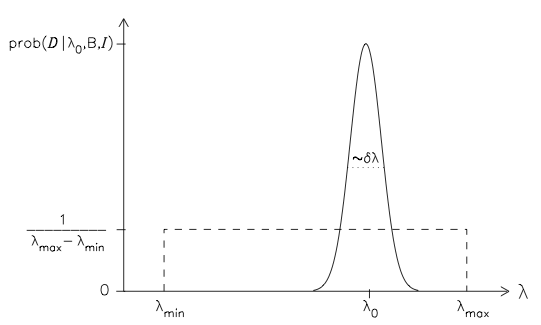

15.2. Bayesian model selection#
The Story of Dr. A and Prof. B#
[Reproduced, with some modifications, from Sivia, 2006].
Dr. A has a theory; Prof. B also has a theory, but with an adjustable parameter \(\lambda\). Whose theory should we prefer on the basis of data \(D\)?— Jefferys (1939), Gull (1988), Sivia (2006)
It is clear that we need to evaluate the posterior probabilities for A and B being correct to ascertain the relative merit of the two theories. If the ratio of the posterior probabilities,
is very much greater than one, then we will prefer A’s theory; if it is very much less than one, then we prefer that of B; and if it is of order unity, then the current data is insufficient to make an informed judgement.
To estimate the odds, let us start by applying Bayes’ theorem to both the numerator and the denominator; this gives
because the term \(p(D|I)\) cancels out, top and bottom. As usual, probability theory warns us immediately that the answer to our question depends partly on what we thought about the two theories before the analysis of the data. To be fair, we might take the ratio of the prior terms, on the far right of Eq. (15.3), to be unity; a harsher assignment could be based on the past track records of the theorists! To assign the probabilities involving the experimental measurements, \(p(D|A,I)\) and \(p(D|B,I)\), we need to be able to compare the data with the predictions of A and B: the larger the mismatch, the lower the corresponding probability. This calculation is straightforward for Dr A, but not for Prof B; the latter cannot make predictions without a value for \(\lambda\).
To circumvent this difficulty, we can use the sum and product rule to relate the probability we require to other pdfs which might be easier to assign. In particular, marginalization and the product rule allow us to express \(p(D | B , I )\) as
The first term in the integral \(p(D | \lambda, B , I )\), where the value of \(\lambda\) is given, is now just an ordinary likelihood function; as such, it is on a par with \(p(D|A,I)\). The second term is B’s prior pdf for \(\lambda\); the onus is, therefore, on the theorist to articulate his or her state of knowledge, or ignorance, before getting access to the data.
To proceed further analytically, let us make some simplifying approximations. Assume that, a priori, Prof B is only prepared to say that \(\lambda\) must lie between the limits \(\lambda_\mathrm{min}\) and \(\lambda_\mathrm{max}\); we can then naively assign a uniform prior within this range:
and zero otherwise. Let us also take it that there is a value \(\lambda_0\) which yields the closest agreement with the measurements; the corresponding probability \(p(D|\lambda_0,B,I)\) will be the maximum of B’s likelihood function. As long as this adjustable parameter lies in the neighbourhood of the optimal value, \(\lambda_0 \pm (\delta\lambda)\), we would expect a reasonable fit to the data; this can be represented by the Gaussian pdf
The assignments of the prior (15.5) and the likelihood (15.6) are illustrated in the figure below. We may note that, unlike the prior pdf \(p(\lambda|B,I)\), B’s likelihood function need not be normalized with respect to \(\lambda\); in other words, \(p(D|\lambda_0,B,I)\) need not equal \(1/ (\delta\lambda) \sqrt{2\pi}\) . This is because the \(\lambda\) in \(p(D|\lambda,B,I)\) appears in the conditioning statement, whereas the normalization requirement applies to quantities to the left of the ‘|’ symbol.

In the evaluation of \(p(D | B , I )\), we can make use of the fact that the prior does not depend explicitly on \(\lambda\); this enables us to take \(p(\lambda|B,I)\) outside the integral in Eq. (15.4).
having set the limits according to the specified range. Assuming that the sharp cut-offs do not cause a significant truncation of the Gaussian pdf of the likelihood, its integral will be equal to \((\delta\lambda) \sqrt{2\pi}\) times \(p(D|\lambda_0,B,I)\). The troublesome term then reduces to
Substituting this into Eq. (15.3), we finally see that the ratio of the posteriors required to answer our original question decomposes into the product of three terms:
The first term on the right-hand side reflects our relative prior preference for the alternative theories; to be fair, let us take it to be unity. The second term is a measure of how well the best predictions from each of the models agree with the data; with the added flexibility of his adjustable parameter, this maximum likelihood ratio can only favour B. The goodness-of-fit, however, cannot be the only thing that matters; if it was, we would always prefer more complicated explanations. Probability theory tells us that there is, indeed, another term to be considered. As assumed earlier in the evaluation of the marginal integral of Eq. (15.4), the prior range \(\lambda_\mathrm{max} - \lambda_\mathrm{min}\) will generally be much larger than the uncertainty \(\pm(\delta\lambda)\) permitted by the data. As such, the final term in Eq. (15.9) acts to penalize B for the additional parameter; for this reason, it is often called an Ockham factor. That is to say, we have naturally encompassed the spirit of Ockham’s Razor: ‘Frustra fit per plura quod potest fieri per pauciora’ or, in English, ‘it is vain to do with more what can be done with fewer’ .
Although it is satisfying to quantify the everyday guiding principle attributed to the thirteenth-century Franciscan monk William of Ockham (or Occam, in Latin), that we should prefer the simplest theory which agrees with the empirical evidence, we should not get too carried away by it. After all, what do we mean by the simpler theory if alternative models have the same number of adjustable parameters? In the choice between Gaussian and Lorentzian peak shapes, for example, both are defined by the position of the maximum and their width. All that we are obliged to do, and have done, in addressing such questions is to adhere to the rules of probability.
While accepting the clear logic leading to Eq (15.9), many people rightly worry about the question of the limits \(\lambda_\mathrm{min}\) and \(\lambda_\mathrm{max}\). Jeffreys (1939) himself was concerned and pointed out that there would be an infinite penalty for any new parameter if the range was allowed to go to \(\pm\infty\). Stated in the abstract, this would appear to be a severe limitation. In practice, however, it is not generally such a problem: since the analysis is always used in specific contexts, a suitable choice can usually be made on the basis of the relevant background information. Even in uncharted territory, a small amount of thought soon reveals that our state of ignorance is always far from the \(\pm\infty\) scenario. If \(\lambda\) was the coupling constant (or strength) for a possible fifth force, for example, then we could put an upper bound on its magnitude because everybody would have noticed it by now if it had been large enough! We should also not lose sight of the fact that the precise form of Eq (15.9) stems from our stated simplifying approximations; if these are not appropriate, then Eqs. (15.3) and (15.4) will lead us to a somewhat different formula.
In most cases, our relative preference for A or B is dominated by the goodness of the fit to the data; that is to say, the maximum likelihood ratio in eqn (15.9) tends to overwhelm the contributions of the other two terms. The Ockham factor can play a crucial role, however, when both theories give comparably good agreement with the measurements. Indeed, it becomes increasingly important if B’s theory fails to give a significantly better fit as the quality of the data improves. In that case, \((\delta\lambda)\) continues to become smaller but the ratio of best-fit likelihoods remains close to unity; according to Eq. (15.9), therefore, A’s theory is favoured ever more strongly. By the same token, the Ockham effect disappears if the data are either few in number, of poor quality or just fail to shed new light on the problem at hand. This is simply because the posterior ratio of Eq. (15.9) is then roughly equal to the complementary prior one, since the empirical evidence is very weak; hence, there is no inherent preference for A’s theory unless it is explicitly encoded in \(p(A|I)/p(B|I)\). This property can be verified formally by going back to Eqs. (15.3), (15.6) and (15.7), and considering the poor-data limit in which \((\delta\lambda) \gg \lambda_\mathrm{max}-\lambda_\mathrm{min}\) and \(p(D|\lambda_0,B,I) \approx p(D|A,I)\).
One adjustable parameter each#
Some further interesting features arise when we consider the case where Dr A also has one adjustable parameter; call it \(\mu\). If we make the same sort of probability assignments, and simplifying approximations, as for Prof B, then we find that
This could represent the situation where we have to choose between a Gaussian and Lorentzian shape for a signal peak, but one associated parameter is not known. The position of the maximum may be fixed at the origin by theory, for example, and the amplitude constrained by the normalization of the data; A and B could then be the hypotheses favouring the alternative lineshapes, where \(\delta\mu\) and \(\delta\lambda\) are their related full-width-half-maxima. If we give equal weight to A and B before the analysis, and assign a similar large prior range for both \(\mu\) and \(\lambda\), then Eq. (15.10) reduces to
For data of good quality, the dominant factor will tend to be the best-fit likelihood ratio. If both give comparable agreement with the measurements, however, then the shape with the larger error-bar for its associated parameter will be favoured. At first sight, it might seem rather odd that the less discriminating theory can gain the upper hand. It appears less strange once we realize that, in the context of model selection, a larger ‘error-bar’ means that more parameter values are consistent with the given hypothesis; hence its preferential treatment.
One adjustable parameter each; different prior ranges#
Finally, we can also consider the situation where Mr A and Mr B have the same physical theory but assign a different prior range for \(\lambda\) (or \(\mu\)). Although Eq. (15.9) can be seen as representing the case when \((\mu_\mathrm{max} - \mu_\mathrm{min})\) is infinitesimally small, so that A has no flexibility, Eq. (15.10) is more appropriate when the limits set by both theorists are large enough to encompass all the parameter values giving a reasonable fit to the data. With equal initial weighting towards A and B, the latter reduces to
because the best-fit likelihood ratio will be unity (since \(\lambda_0 = \mu_0\)) and \(\delta\lambda = \delta\mu\). Thus, our analysis will lead us to prefer the theorist who gives the narrower prior range; this is not unreasonable as he must have had some additional insight to be able to predict the value of the parameter more accurately.
Comparison with parameter estimation#
The dependence of the result in Eq. (15.9) on the prior range \((\lambda_\mathrm{max} - \lambda_\mathrm{min})\) can seem a little strange, since we haven’t encountered such behaviour in the preceding chapters. It is instructive, therefore, to compare the model selection analysis with parameter estimation. To infer the value of \(\lambda\) from the data, given that B’s theory is correct, we use Bayes’ theorem:
The numerator is the familiar product of a prior and likelihood, and the denominator is usually omitted since it does not depend explicitly on \(\lambda\); hence this relationship is often written as a proportionality. From the story of Dr A and Prof B, however, we find that the neglected term on the bottom plays a crucial role in ascertaining the merit of B’s theory relative to a competing alternative.
In recognition of its new-found importance, the denominator in Bayes’ theorem is sometimes called the ‘evidence’ for B; it is also referred to as the ‘marginal likelihood’, the ‘global likelihood’ and the ‘prior predictive’.
Since all the components necessary for both parameter estimation and model selection appear in Eq. (15.13), we are not dealing with any new principles; the only thing that sets them apart is that we are asking different questions of the data.
A simple way to think about the difference between parameter estimation and model selection is to note that, to a good approximation, the former requires the location of the maximum of the likelihood function whereas the latter entails the calculation of its average value. As long as \(\lambda_\mathrm{min}\) and \(\lambda_\mathrm{max}\) encompass the significant region of \(p(D|\lambda,B,I)\) around \(\lambda_0\), the precise bounds do not matter for estimating the optimal parameter and need not be specified. Since the prior range defines the domain over which the mean likelihood is computed, due thought is necessary when dealing with model selection. Indeed, it is precisely this act of comparing ‘average’ likelihoods rather than ‘maximum’ ones which introduces the desired Ockham balance to the goodness- of-fit criterion. Any likelihood gain from a better agreement with the data, allowed by the greater flexibility of a more complicated model, has to be weighed against the additional cost of averaging it over a larger parameter space.